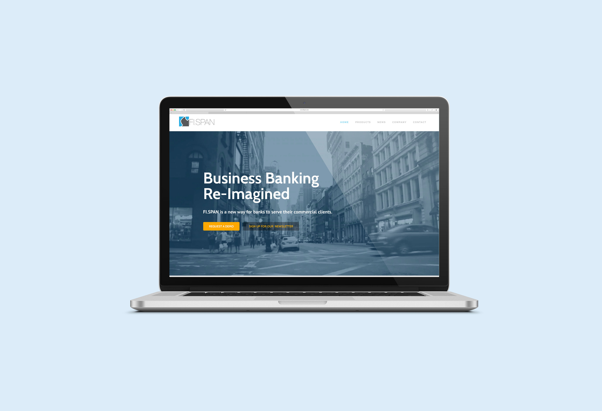
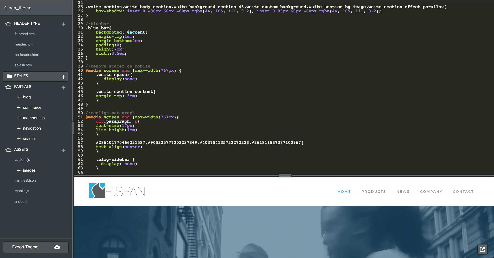
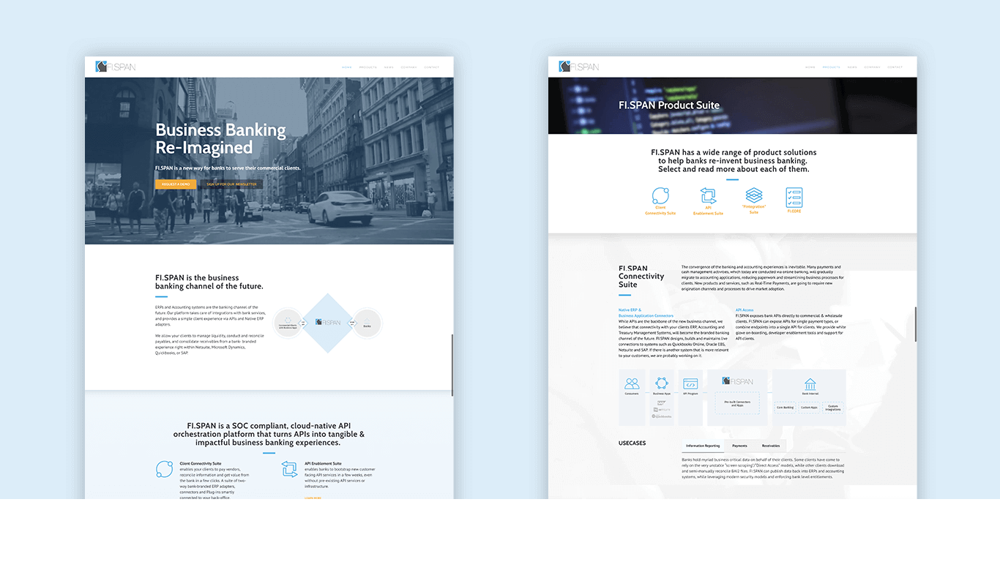

FI.SPAN Corporate Website
FI.SPAN is a fast-growing technology startup that provides a cloud-based API platform which enhances online banking experience among banks, their clients, and FinTech companies. As an UX/UI Developer at FI.SPAN, one of my responsibilities was to redesign the company's corporate website to make it more modernized, user-friendly and professional to potential viewers.
To visit the website, please visit www.fispan.com
Issue
To pain point the issues, I looked through the previous website and discuss with the Strategy Lead about what content the company wants to include in order to plan out a strategic solution that enhance navigation and refresh the overall look of the website.
The previous website appeared to be lack of hierarchy and consistency. There is no clear call-to-action to prompt the viewers to take on the desired actions. Some pages also contained large about of content which seemed to be difficult to navigate through the information. Hence, my design consideration was to focus on the visual appeal as well as to restructure the layout of the content.

Keep it consistent
To keep the consistency, establish a style is crucial. After studying the brand elements of the company, I decided to keep the the overall feel to be modern, consists with majority of dark grey, white, and blue from the brand colour scheme. The addition of light blue brings in more dimensions without making the layout overwhelming and the orange makes the contrast which takes the role for call-to-action.

I also created a set of icons which associate with the contents and enhance visual communication.

Put Everything Together
Before the actual implementation, I usually made rough sketched that allowed me to quickly drop down ideas. However, since the website would be made based on an existing template there was limitation on the layout and spacing. And so, I made multiple versions so I can get a more accurate view and for the team to review.
Multiple iterations for the home page


To utilize the customization of the website, I worked on the styling by coding in CSS.
Result
The new design has provided a refreshed impression on the brand while still maintaining the consideration of the existing brand language. The updated website has successfully reflecting the company's positioning as a dominant and innovated bank integration service provider.
To view the website, please visit www.fispan.com
 ◀ previous project: GET TALKING CHINESE next project:PRESSREADER ▶